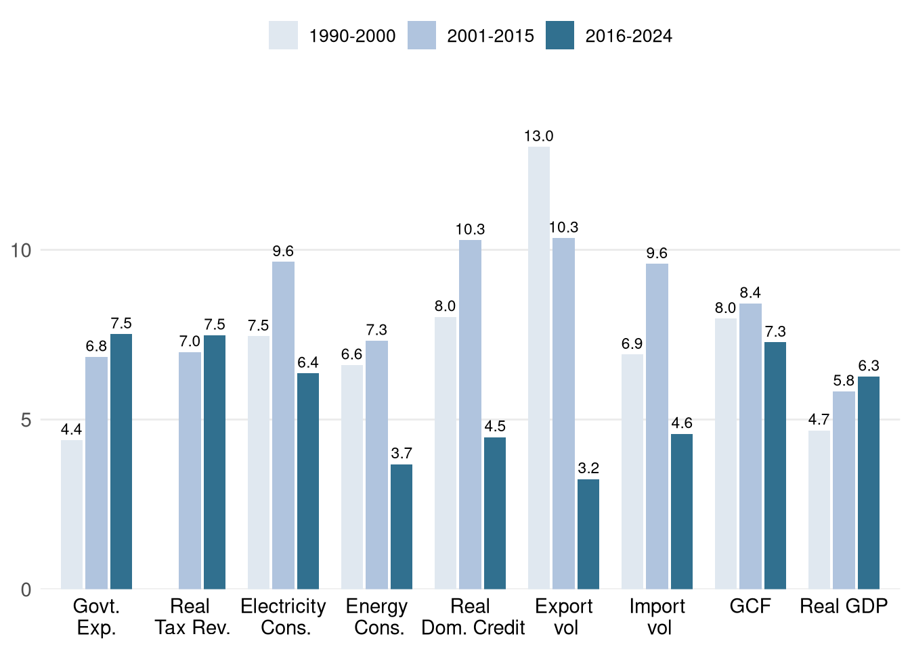
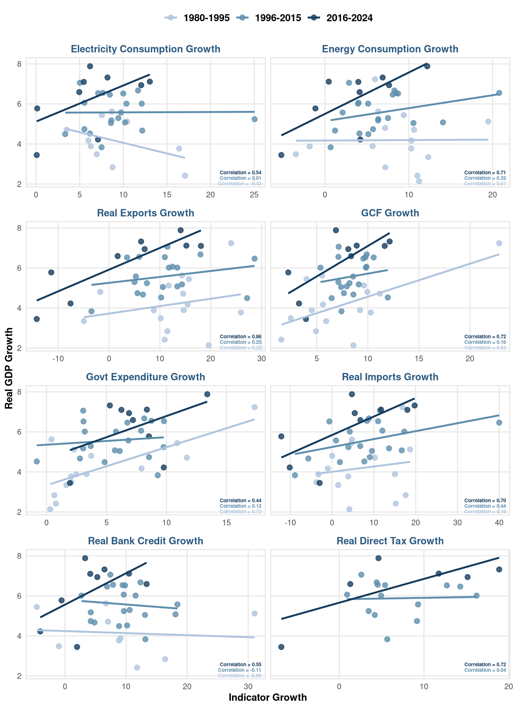
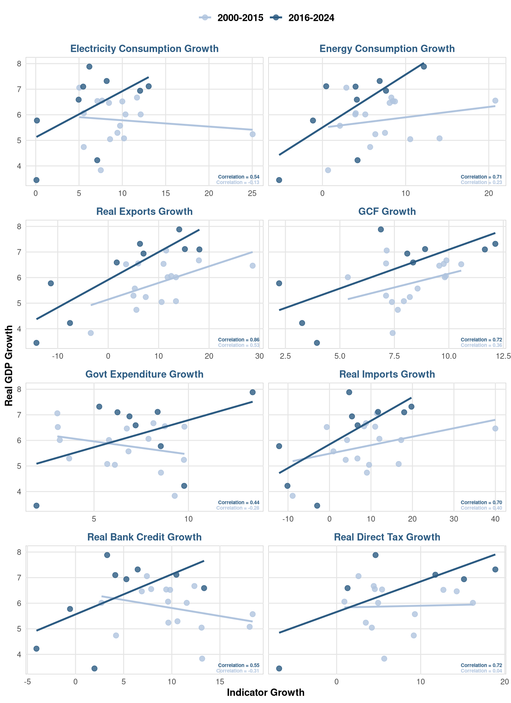
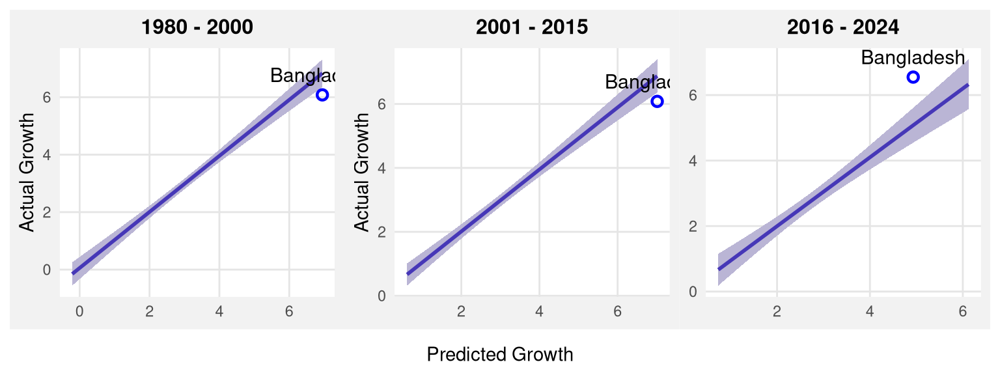

GDP estimation of Bangladesh
Introduction
Conceptual Framework
Methods and Data
Results
Comparison of growth rates
Figure 1 illustrates the average annual growth rates of nine key macroeconomic indicators across three distinct historical epochs: 1980-2000, 2001-2015, and 2016-2024. The data captures various dimensions of the economy, including fiscal policy, real economic activity proxies, financial depth, external trade, investment, and aggregate output. An exploratory analysis of these indicators reveals a profound structural divergence in the macroeconomic data during the most recent period (2016-2024) compared to historical trends. The salient feature of this divergence is the stark decoupling of aggregate output from its underlying macroeconomic fundamentals. While official real GDP growth demonstrates a steady, secular acceleration across all three periods—rising from 4.4% in 1980-2000 to 5.8% in 2001-2015, and peaking at 6.3% in the 2016-2024 period—virtually every other indicator of private and real sector activity exhibits a strong deceleration during this exact same final epoch.
This aggregate acceleration contrasts sharply with the deceleration of hard proxies for economic activity. Physical indicators, such as energy use, are frequently utilized as highly reliable, hard-to-manipulate proxies for industrial output and overall economic health. However, energy consumption growth halved from 7.3% in the previous two periods to just 3.7% in 2016-2024, while electricity consumption similarly decelerated from a peak of 9.6% to 6.4%. This sharp contraction in energy demand is highly inconsistent with an accelerating, industrializing economy. Furthermore, the external and financial sectors point toward a macroeconomic environment constrained by tightening credit and a slowing global footprint. Export volume growth experienced a multi-decade downward trend, dropping from a historical high of 12.6% to a sluggish 3.2% in the most recent period. Import volume mirrored this trend, plunging to 4.6%, indicating a dual loss of export competitiveness and compressed domestic demand for imported capital and intermediate goods. Concurrently, real domestic credit growth cratered from 10.3% to 4.5%, suggesting heavily constrained private sector borrowing, while gross capital formation (GCF) dropped to 7.3%, breaking its historical stability.
Notably, the only indicators that align with or exceed the upward trajectory of real GDP are fiscal metrics. Government expenditure steadily climbed to 7.5% in the most recent period, accompanied by a corresponding rise in real tax revenue growth to 7.5%. This suggests that economic expansion in the latest epoch has become increasingly reliant on public sector spending rather than private sector dynamism. Ultimately, this visual evidence articulates a critical macroeconomic anomaly wherein official aggregate output reports robust acceleration despite profound deceleration in trade volumes, domestic credit, investment, and energy consumption. Analytically, this divergence may suggest a growth model over-reliant on government expenditure that masks private-sector stagnation or systemic measurement discrepancies resulting in the statistical overestimation of real GDP during the 2016-2024 period with the latter one more likely.

GDP growth and other macroeconomic variables
Comparison since 1980
Figure 2 presents a matrix of scatter plots detailing the bivariate relationships between real GDP growth—plotted continuously on the y-axis—and eight macroeconomic indicators across three distinct temporal regimes: 1980-1995, 1996-2015, and 2016-2024. Through linear fit lines and the spatial distribution of data clusters, these panels map the shifting macroeconomic elasticities of aggregate output relative to energy consumption, external trade, financial deepening, investment, and fiscal variables.
A rigorous examination of these spatial distributions reveals a systemic structural break in the growth elasticities during the 2016-2024 epoch. In the historical regimes, particularly from 1996 to 2015, robust real GDP growth was generally predicated upon commensurate expansions in physical and financial proxies; the data points for these periods are distributed broadly across the x-axis, demonstrating standard covariation. Conversely, the 2016-2024 observations universally exhibit a pronounced upward and leftward translation in coordinate space. This distinct clustering indicates that historically high levels of reported GDP growth (the upward shift on the y-axis) are materializing simultaneously with compressed growth in the underlying indicators (the leftward shift on the x-axis). The aggressive steepening of the linear trend lines in this latest period further highlights the anomaly, mathematically implying an implausible macroeconomic elasticity where marginal, stagnant, or even negative growth in hard fundamentals—such as export volumes, real bank credit, and energy consumption—coincides with peak economic expansion.
This bivariate analysis provides the mechanistic statistical foundation for the divergence paradox identified in the previously analyzed bar chart. While the bar diagram illustrated the absolute decoupling of period averages—highlighting accelerating GDP amidst decelerating macroeconomic fundamentals—the scatter plots expose the total breakdown of the historical covariance structure itself. The persistent leftward-and-upward migration of the 2016-2024 data clusters visually confirms that the official GDP metric has unmoored from its traditional macroeconomic determinants. Historically, as the 1996-2015 data illustrates, achieving a 6% GDP expansion frequently required 10% to 20% growth in exports or domestic credit. The contemporary data implies the economy now achieves and exceeds this output with near-zero or vastly diminished growth in those exact same inputs. This statistical decoupling strongly corroborates the prior diagnostic hypothesis: the recent acceleration in official aggregate output cannot be empirically reconciled with the underlying real economy dynamics, thereby amplifying academic concerns regarding systemic statistical overestimation rather than a genuine, productivity-driven structural transformation.

Comparison since 2000

Regression results
Building upon the bivariate breakdown illustrated in the preceding scatter plots, the Figure 4 presents a formalized econometric synthesis by plotting actual versus predicted real GDP growth for Bangladesh across two temporal regimes: 2001-2015 and 2016-2024. The visualization features a regression line with an accompanying confidence interval, mapping the expected trajectory of aggregate output based on a predictive model—presumably a function of the underlying macroeconomic fundamentals analyzed in the previous sections. A rigorous examination of this figure provides definitive statistical quantification of the divergence paradox. During the 2001-2015 period, the observation for Bangladesh lies in close proximity to the regression line and firmly near the predictive confidence bounds. In this era, the actual reported real GDP growth (approximately 6%) is highly consistent with the predicted growth, indicating that the official aggregate output figures were statistically grounded in and accurately reflected the contemporary macroeconomic realities of trade, investment, and energy consumption.
In stark contrast, the 2016-2024 panel exposes a profound structural break and a massive prediction error. While the predicted growth for Bangladesh contracts significantly—shifting leftward on the x-axis to approximately 5%—the actual reported growth accelerates, shifting upward on the y-axis. Consequently, the Bangladesh data point completely detaches from the established regression trend, manifesting as a large positive residual residing far outside the statistical confidence interval. This visualization serves as the macroeconomic capstone to the preceding bar and scatter charts. Because the hard proxies for economic activity (such as export volumes, domestic credit, and electricity consumption) collapsed during the 2016-2024 epoch, any rigorous econometric model will naturally predict a corresponding deceleration in aggregate output. The glaring reality that official GDP figures defied this downward prediction mathematically formalizes the anomaly. Ultimately, this predictive dislocation confirms that the recent acceleration in official GDP cannot be empirically justified by the nation’s underlying macroeconomic covariates, providing compelling econometric evidence that the reported growth figures during the 2016-2024 period are systematically unmoored from the real economy.

Source: Authors’ calculations based on data from CEIC, World Development Indicators (WDI), and Bangladesh Bureau of Statistics (BBS).